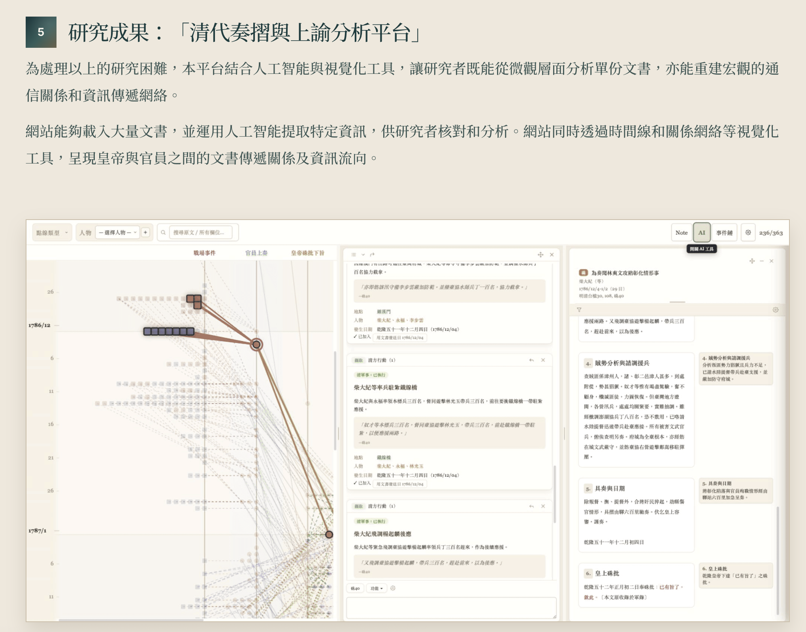
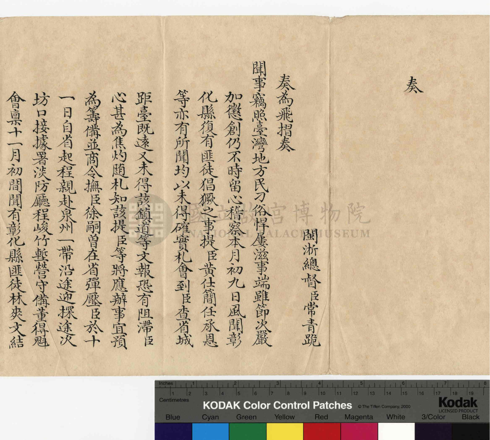
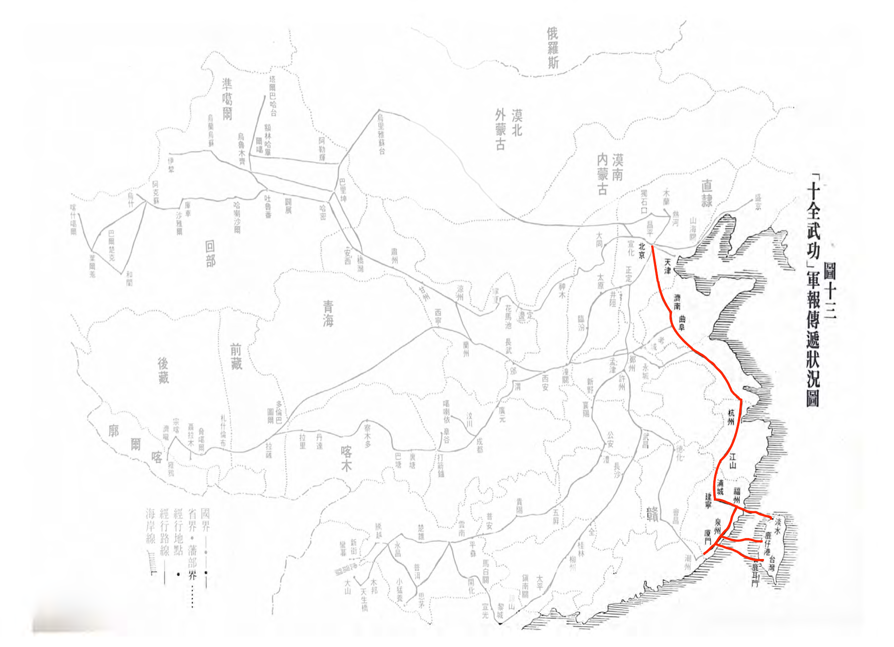

原始碼與資料夾
GitHub Repository
首先，研究者可以從這個 GitHub Repository 下載平台的原始碼。Repository 內包含平台網站的程式碼、AI Skills的Markdown 檔案，以及儲存一手史料和 AI 分析結果的資料夾。

首先，研究者可以從這個 GitHub Repository 下載平台的原始碼。Repository 內包含平台網站的程式碼、AI Skills的Markdown 檔案，以及儲存一手史料和 AI 分析結果的資料夾。

其次，研究者可以使用 Agentic AI （如ChatGPT Work 和Codex） 閱讀下載的原始碼，並按照 README.md 的說明部署平台，在本機開啟前端網頁。

其後，研究者可以利用 Agentic AI 協助整理原始文書、轉換為結構化資料、修改或建立 AI Skills，以及修改網站介面和功能等的程序。

此外，研究者亦需要使用成本較低的 AI API，例如 Gemini 或 DeepSeek，用於處理大量文本的 OCR，以及在多份文書上批次執行 AI Skills。

最後，建議研究者建立自己的 GitHub Repository，在雲端備份和管理程式碼、AI Skills、結構化資料及分析結果，方便後續維護、更新和協作。